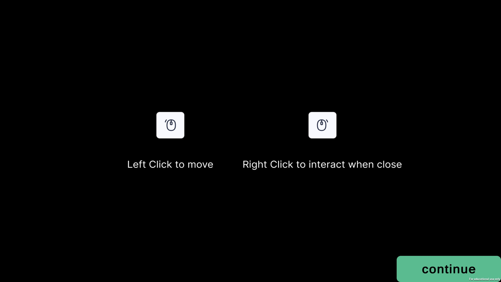

04 · Iteration
Seven rooms on paper. Two rooms that ship.
We kept the GDD versioned section by section, so every cut and change has a date and a reason. Here is how the design moved over seven weeks.
Initial GDD
Seven interconnected cubes
A man has lost fragments of his body. Seven memory rooms (Centre, M1–M4, Junk, Exit) stack into one structure, and each room hides a body fragment that grants a new ability.
- Scale shifting through doors
- Mini-games per room: racing, fishing, building
- 3D ↔ 2D shifting doors
Paper prototypes
Defining scale as a rule
Paper drafts fixed the player sizes against a 1×1×1 room (L ¾, M ½, S ¼, XS ⅛), the click-to-move controls, the ten-step room-moving route and how the camera follows a scale change.
- Room cubes can be moved to open new paths
- Carried objects rescale with the player

Redesign
Cut to three rooms, then two
After prototyping as a team we judged seven rooms impossible in the time we had. The redesign kept the idea of travelling back and forth between rooms but rebuilt the story around Life, Work and Childhood inside one Outworld. Childhood was cut during implementation.
- Story shifts from "body fragments" to "find the dream within"
- Lever replaces pushing Room Life by hand
- Room Childhood
Final build
Refined after playtesting
All levels from the v2 prototype implemented, then tuned with what players told us: blueprint bricks moved closer to reduce difficulty, a guide scene added before play, hints and outlines added in-game.
- Moebius shaders + dust particles
- Story subtitles at start and end
- Sunrise / sunset in Room Work
Playtest · 20–27 Oct 2025
What ten players told us
- confusedMost players didn't know what to do when Room Life opened. There was little to interact with in the first minute.
- excitedAfter 1–2 minutes, once they left through the first door and came back changed, 7 of 10 understood the door/size rule.
- splitRe-entering Room Life at XS: half said "interesting", half said "confusing".
- frustrated6 players found XS movement tricky because only some surfaces were walkable; stair animations were unfinished.
- difficultHalf found the large player hard to steer while pushing buildings in Room Work.
- finished?4 players took 10+ minutes, 3 took 8–10, 3 did not finish.
Survey · average score out of 5 · hover a row for the feedback
An intro page with the two controls (left click move, right click interact) and a story line.
A step-by-step hint panel and short hint videos, always one click away.
Glow and outline highlights plus camera nudges toward the next object.
Navigation limited to intended surfaces, consistent climb and walk animations.
UI iteration · title and HUD

Start and Settings stacked vertically. Settles structure only.

Text title, small avatar button. Players missed the theme and the Start button.
The slumped protagonist, Moebius palette, a big mint Start button. Players knew where to click.

Controls card before play and a "? hints" icon for the puzzles.